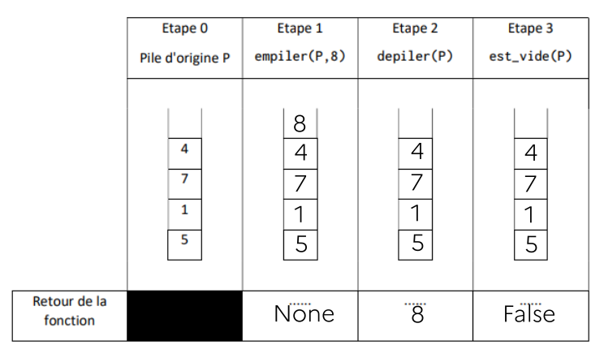
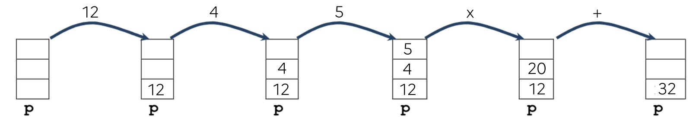

Exercices
Exercice 1
Exercice 5 du sujet Centres Étrangers 1 - 2021


1 2 3 4 5 6 7 8 9 | |
Avec le code ci-dessus, la pile p est vide à la fin de l'exécution. Pour éviter cela, on peut par exemple créer une pile q temporaire qui recevra les éléments de p, avant de retransférer à la fin du programme les éléments de q dans p.
1 2 3 4 5 6 7 8 9 10 11 12 13 14 | |
Q4a. On va vider la pile p dans une pile q tout en comptant le nombre d'éléments dépilés dans une variable t.
On redonne ensuite à p son état initial en vidant q dans p.
Q4b
1 2 3 4 5 6 7 8 9 10 11 | |
Exercice 2
Exercice 1 du sujet La Réunion J2 - 2022

La variable temp contient la valeur 25.
p1 est identique, elle contient toujours les valeurs 25, 3 et 7.
1 2 3 4 | |
1 2 3 4 5 6 | |
Exercice 3
Exercice 2 du sujet Métropole Candidats Libres J1 - 2021
1 2 3 4 | |
L'affichage produit est 7, 5, 5, 2.
- Cas n°1 :
3, 2 - Cas n°2 :
3, 2, 5, 7 - Cas n°3 :
3 - Cas n°4 :
«pile vide»
La fonction mystere permet d'obtenir la pile retournée jusqu'à un élément particulier (s'il existe).
1 2 3 4 | |
1 2 3 4 5 6 7 8 9 | |
Exercice 4
Exercice 5 du sujet Amérique du Nord J1 - 2021
Le contenu de la pile P sera
| "rouge" |
| "vert" |
| "jaune" |
| "rouge" |
| "jaune" |
_________
1 2 3 4 5 6 7 8 9 10 | |
1 2 3 4 5 6 7 8 9 | |
1 2 3 4 5 6 7 8 9 10 11 12 | |
1 2 3 4 5 | |
Exercice 5
Exercice 2 du sujet Centres Étrangers J1 - 2022
Il faut écrire l'instruction :
panier_1.enfile((31002, "café noir", 1.50, 50525))
1 2 3 4 | |
1 2 3 4 5 6 7 8 9 | |
1 2 3 4 5 6 7 | |
Exercice 6
Cet exercice est basé sur l'énigme n°5 d'Advent Of Code 2018.
Le but est de réduire le plus possible une chaîne de caractères (comme dabAcCaCBAcCcaDA ) en obéissant à la règle suivante :
Règle de simplification
Dès que deux lettres identiques mais de casse différente (majuscule-minuscule ou minuscule-majuscule) sont côte à côte dans la chaîne, on les supprime de la chaîne.
Exemple :
dabAcCaCBAcCcaDA On enlève le premier 'cC'.
dabAaCBAcCcaDA Cela donne naissance à un 'Aa', qu'on enlève.
dabCBAcCcaDA On enlève alors 'cC' (ou 'Cc', cela revient au même).
dabCBAcaDA Plus aucune simplification n'est possible.
La chaîne de caractères qu'il va falloir simplifier contient ... 50000 caractères.
1. Élaboration d'une fonction utile⚓︎
On rappelle que la fonction ord renvoie le code ASCII d'une lettre. En comparant les codes ASCII de deux lettres identiques mais de casse différentes, en déduire une fonction simplifiable qui prend en paramètres deux lettres l1 et l2 et qui renvoie un booléen indiquant si ces deux lettres sont simplifiables.
Exemples d'utilisation :
>>> simplifiable('c', 'C')
True
>>> simplifiable('C', 'c')
True
>>> simplifiable('C', 'C')
False
Correction
1 2 | |
2. Une seule simplification de la chaîne de caractères⚓︎
Écrire une fonction simplifie qui prend en paramètre une chaîne de caractère s et qui renvoie cette même chaîne de caractères, ayant été simplifiée une fois au maximum.
Principe : on parcourt la chaîne et dès qu'on trouve une simplification à faire, on simplifie la chaîne et on la renvoie immédiatement.
Exemples d'utilisation :
>>> simplifie('dabAcCaCBAcCcaDA')
'dabAaCBAcCcaDA'
>>> simplifie('dabAaCBAcCcaDA')
'dabCBAcCcaDA'
>>> simplifie('dabCBAcCcaDA')
'dabCBAcaDA'
>>> simplifie('dabCBAcaDA')
'dabCBAcaDA'
Pour information, on rappelle la technique de slicing de chaîne de caractères :
>>> ch = 'abcde'
>>> ch[:2]
'ab'
>>> ch[2:]
'cde'
Correction
1 2 3 4 5 | |
3. Résolution du problème⚓︎
Après vous être demandé comment savoir facilement qu'une chaîne n'était plus simplifiable, proposer une fonction reduction qui prend en paramètre une chaîne s et qui renvoie cette chaîne s une fois effectuées toutes les simplifications possibles.
Exemple d'utilisation :
>>> reduction('dabAcCaCBAcCcaDA')
'dabCBAcaDA'
Correction
1 2 3 4 5 6 7 8 | |
4. Le vrai énoncé d'Advent of Code⚓︎
Dans cette énigme n°5, la réponse à donner est le nombre de caractères de la chaîne une fois simplifiée. Ce qui ne devrait pas nous poser de problème.
Par contre, la chaîne 'dabAcCaCBAcCcaDA' sur laquellle nous avons travaillé n'est qu'un exemple...
La vraie chaîne contient 50000 caractères :
Anecdotique ? Pas vraiment...
Effectuez la réduction de cette chaîne avec votre programme précédent. Que remarquez-vous ?
Correction
1 2 3 4 5 6 7 8 9 10 11 12 13 14 15 16 17 18 19 20 21 | |
Le résultat (9370) est loooong à nous parvenir ! (30 secondes sur ma machine)
5. Sauvé par une pile⚓︎
Cet exercice peut être résolu beaucoup plus efficacement grâce à l'utilisation d'une pile... mais comment ?
Vous pouvez utiliser l'implémentation de pile disponible ici.
Aide à la construction de l'algorithme
Pour chaque lettre de la chaîne :
- si la pile est vide, on empile cette lettre
- sinon, on regarde si la lettre est simplifiable avec la lettre du haut de la pile :
- si oui, on supprime cette lettre du haut de la pile et on passe à la lettre suivante de la chaîne
- si non, on empile cette lettre sur la pile, et on passe à la suivante.
Correction
1 2 3 4 5 6 7 8 9 10 11 12 13 14 15 16 17 | |
Le résultat est cette fois immédiat : 0.04 secondes sur ma machine, soit environ 1000 fois plus rapide que le code précédent.